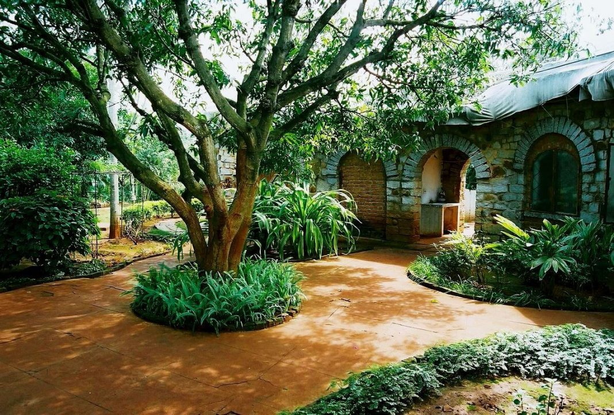

Welcome to Nrityagram

Nrityagram is India's first modern Gurukul (residential school) for Indian classical dances and an intentional community in the form of a dance village,[2] set up by Odissi dancer Protima Gauri in 1990. The residential school offers training in Indian classical dance forms, Odissi, Mohiniattam, Kathak, Bharatnatyam, Kuchipudi, Kathakali and Manipuri, eight hours a day, six days a week for seven years, following the ancient Guru-shishya tradition.[3] Designed by famous Indian architect Gerard da Cunha, the community is situated near Hesaraghatta Lake 30 km from Bengaluru.[4] Today the Nrityagram Dance Ensemble has performed across India and in many countries abroad.
• This place is good for a family trip.
• The simple yet magnificent place is a perfect place to escape the city and immerse yourself in both culture and nature
• This spiritual and beautiful world is one of the best offbeat places to visit in Bangalore. It boasts of both beautifully maintained gardens, as well as temples with rustic structure
• Bangalore to Nrityagram approximate distance is 45 Kms and takes approximately 1 hour by road
• If you rent a car, the roundtrip travel fare would be Approx. Rs 2800